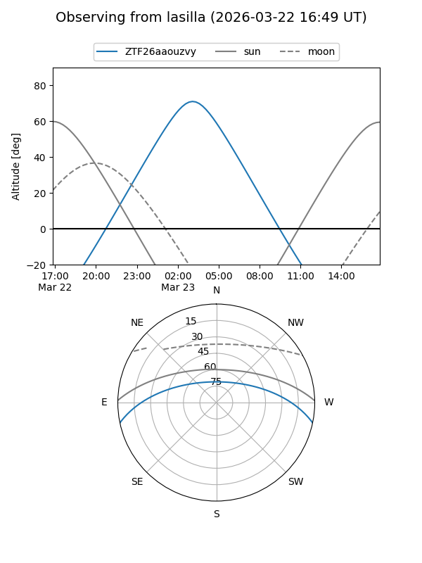
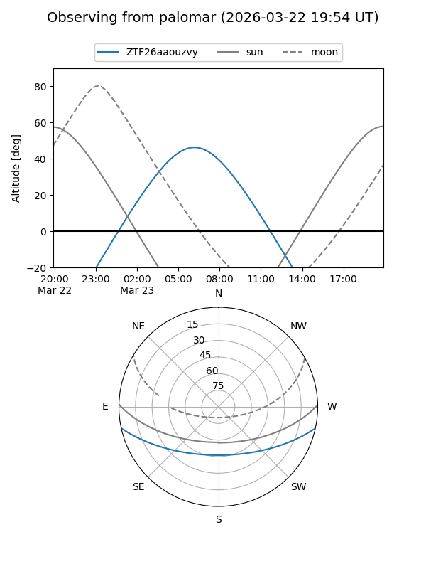

ZTF26aaouzvy
Target ZTF26aaouzvy at 2026-03-23 08:18
Aliases and brokers:
FINK: link
Lasair: link
ALeRCE: link
alt names
ZTF26aaouzvy (ztf,fink_ztf)
Coordinates:
equatorial (ra, dec) = 155.9702,-10.19975
equatorial (HMS+DMS) = 10:23:52.85,-10:11:59.10
galactic (l, b) = (254.0956,+38.30263)
Flags:
Photometry:
last ztfg=17.14
1 ztfg detections
Lightcurve
Visibility


Additional plots